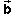
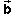

For the following material it is necessary that you have a good understanding of vector addition.
Let us use Property 1 of the difference to find the
difference between the two vectors  and  shown
above. Thus, we need to find a vector, denoted - , that added
to gives ,
and  shown
above. Thus, we need to find a vector, denoted - , that added
to gives ,
+ ( - )
= .
To find this vector you can arrange and
tail-to-tail, as in the diagram above, and then draw an arrow
from the tip of to the tip of
, resulting in the green vector.
Convince yourself that the green vector satisfies the given
equation.
This way of finding the difference vector - will be
called the comparison method here. Reason: by joining
the vectors tail-to-tail, we are comparing them. The separation
of the two tips is a measure of how different the two
vectors are. If the tips coincide, the vectors are the same and
their difference is zero.
The comparison method takes advantage of Property 1 of the difference. On Page 3, the difference will be constructed using Property 2 of the difference.